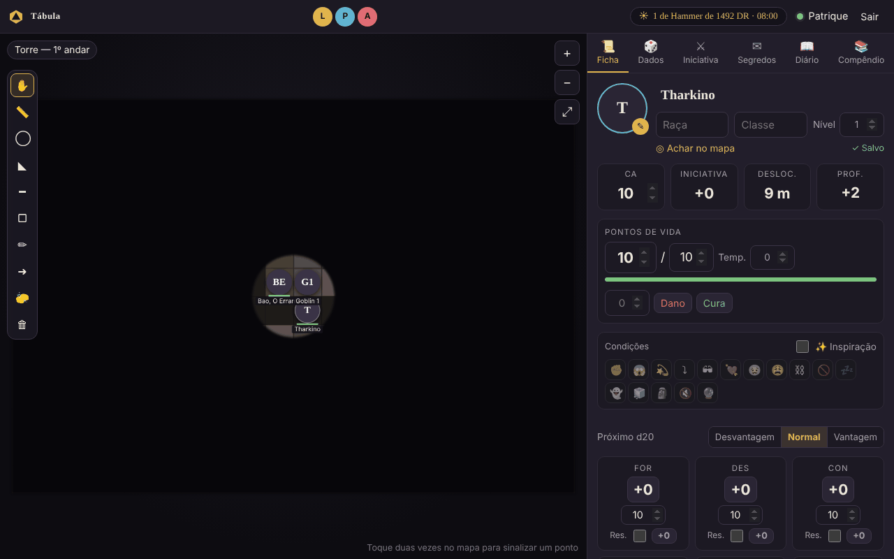
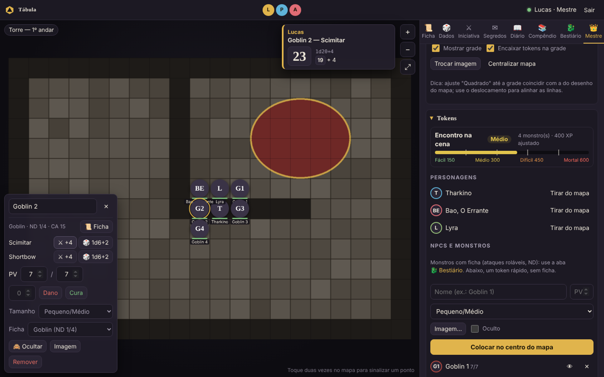
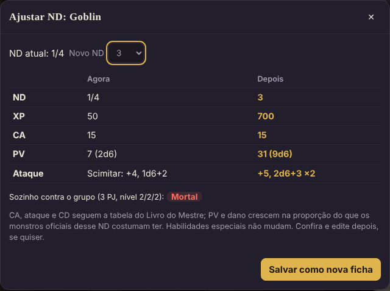
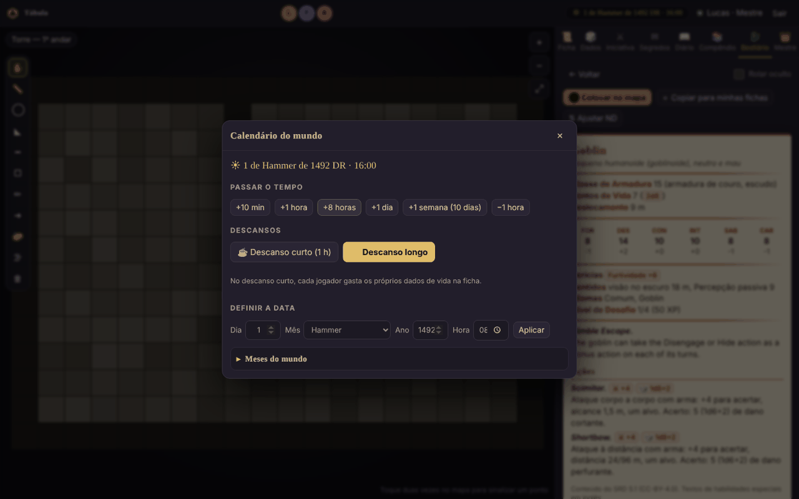
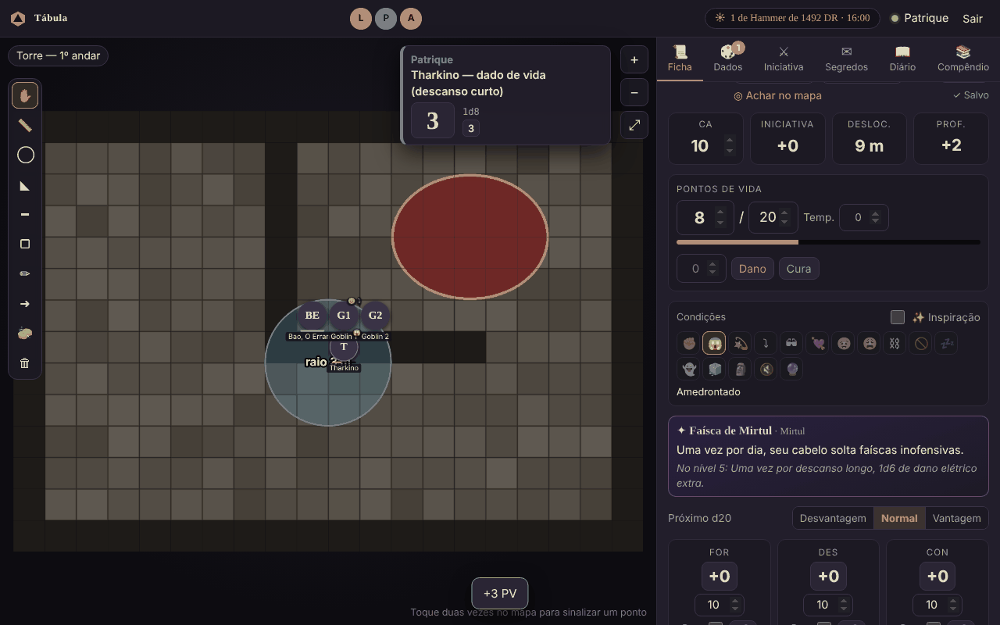
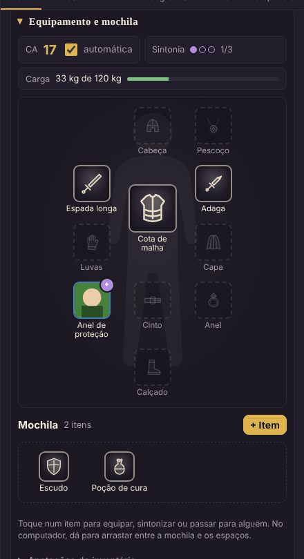

Guia do mestre
Este guia é o resumo. O passo a passo de cada ferramenta está no manual, e o que mudou em cada versão, em novidades.
Tudo que é exclusivo do mestre fica na aba 👑 Mestre, além das ferramentas de edição nas outras abas.
Antes da primeira sessão
Criar os jogadores
Mestre → Jogadores e personagens → Usuários
- Preencha nome e senha do jogador.
- Deixe "Já criar personagem" marcado e escreva o nome do personagem: a ficha já nasce vinculada a ele.
- Mande o link da mesa, o nome e a senha para cada jogador (a senha, de preferência, no privado).
Papéis possíveis: - Jogador: vê e edita só o próprio personagem, move só o próprio token. - Telão (só assiste): vê só o mapa e a iniciativa, sem nenhuma aba. Para uma TV no presencial.
Para trocar a senha de alguém, use o 🔑 ao lado do nome. Para trocar o dono de um personagem, use o menu ao lado dele em Personagens.
Criar uma cena (mapa)
Mestre → Cenas (mapas)
- Dê um nome à cena.
- Em Quadrados na largura do mapa, conte quantos quadrados o desenho tem de uma borda à outra, na horizontal. Isso faz o token ter o tamanho de um quadrado.
- Clique em Escolher imagem e criar (PNG, JPG, WEBP ou GIF, até 25 MB).
A primeira cena já vai ao ar. Para trocar o que os jogadores veem, clique em Mostrar em outra cena.
Acertar a grade
Mestre → Cena ativa (grade)
- Quadrados na largura: o jeito mais fácil; a mesa calcula o tamanho do quadrado.
- Quadrado (px): ajuste fino.
- Desloc. X / Y: empurra a grade até as linhas coincidirem com as do desenho.
- Mostrar grade e Encaixar tokens na grade podem ser desligados para mapas sem grade.
Se um token parecer minúsculo ou "não aparecer", quase sempre é a grade com o tamanho errado.
Tokens
Mestre → Tokens
- Personagens: Colocar no mapa / Tirar do mapa. A foto do token é a foto da ficha.
- NPCs e monstros: nome, PV, tamanho e imagem (opcional). Se o nome terminar em número
(
Goblin 1), o próximo já vem comoGoblin 2. - Marque Oculto para preparar uma emboscada: o token fica semitransparente para você e invisível para os jogadores.
O token novo aparece no centro da tela, num quadrado livre, e pisca para você achar.
Clicar num token abre um painel no canto do mapa: nome, tamanho, PV do NPC, imagem, ocultar/revelar e remover. Com o token selecionado, as setas do teclado andam um quadrado.
Os jogadores veem a barra de vida dos personagens, mas não a dos monstros: só um aro vermelho quando o monstro está com metade da vida ou menos, e o token cinza com ✖ quando ele cai.
Condições: no painel do token, clique nos ícones (envenenado 🤢, caído ⤵, amedrontado 😱, concentração 🔮…). Elas aparecem no token para todos. Num personagem, a condição vai também para a ficha dele.
Ferramentas do mapa
A barra à esquerda do mapa (todos têm, menos a névoa):
| ✋ | Mover e selecionar (Esc volta para ela) |
| 📏 | Régua: arraste para medir. Diagonal conta como um quadrado (1,5 m). Todos veem a régua de quem está medindo |
| ◯ ◣ ━ ▢ | Áreas de magia: esfera (arraste do centro até a borda), cone, linha e cubo. A medida aparece escrita |
| ✏ ➜ | Desenho livre e seta |
| 🧽 | Borracha: toque num desenho. Cada jogador apaga os seus; você apaga qualquer um |
| 🗑 | Limpar: você apaga todos os desenhos da cena; o jogador, só os dele |
Atalhos: R régua, C círculo, D desenho, Esc mover.
Névoa de guerra

- Clique em 🌫 e marque Ligada: o mapa inteiro fica coberto para os jogadores.
- Escolha ▭ Revelar ou ◯ Revelar e arraste no mapa sobre o que o grupo está vendo.
- ▭ Esconder cobre de novo; ↶ desfaz o último; Cobrir tudo e Revelar tudo fazem o óbvio.
Para você a névoa é translúcida, para continuar vendo o mapa. Para os jogadores ela é escura, e os monstros que estão na névoa nem são enviados para o navegador deles (não dá para "espiar"). Os personagens dos jogadores aparecem sempre.
Bestiário (fichas de NPCs e monstros)
Aba 🐉 Bestiário, só sua. As fichas ficam salvas na campanha.

Pegar um monstro pronto
- Biblioteca SRD → busque (em português ou inglês) ou filtre por ND.
- Abra o monstro e escolha Colocar no mapa (ele é copiado para Minhas fichas automaticamente) ou Copiar para minhas fichas para editar antes.
Os 334 monstros do SRD 5.1 têm os nomes dos mais comuns e o texto dos ataques em português; habilidades especiais estão em inglês. Você pode editar qualquer cópia.
Criar uma ficha do zero
+ Nova ficha → nome, ND, tamanho, CA, PV, atributos e ações. Preencha Atq (bônus de ataque) e
Dano (ex.: 1d8+3) para o ataque ganhar botões de rolar. A imagem da ficha vira o token.
Colocar no mapa
Na ficha: ⬤ Colocar no mapa → quantos, PV (média ou rolar para cada um) e se ficam ocultos.
A janela já mostra como fica a dificuldade do encontro com eles. Os tokens recebem números
(Goblin 1, Goblin 2…) e o tamanho certo (Grande = 2×2, Enorme = 3×3…).
Ajustar o ND (deixar mais forte ou mais fraco)
Na ficha: ⇅ Ajustar ND → escolha o novo ND e veja a comparação lado a lado. Salvar como nova
ficha cria uma variante (Goblin (ND 3)) sem mexer no original.

- CA, bônus de ataque e CD mudam conforme a tabela Estatísticas de Monstro por Nível de Desafio do Livro do Mestre.
- PV e dano crescem na proporção do que os monstros oficiais daquele ND costumam ter. A tabela do livro é bem mais alta que os monstros reais nos ND baixos (um goblin ND 1/4 "deveria" ter ~42 PV), então usar ela direto deixaria tudo uma esponja de dano.
- Se um monstro de um ataque só fica muito mais forte, ele ganha Ataques Múltiplos em vez de um golpe gigante.
- Habilidades especiais não mudam. Confira a ficha e ajuste à mão o que quiser.
Dica de equilíbrio: em vez de subir muito o ND de um monstro, costuma ser mais divertido subir um pouco e colocar mais criaturas. Fique de olho no medidor de dificuldade.
Dificuldade do encontro
Em Mestre → Tokens (e ao colocar monstros) aparece Fácil / Médio / Difícil / Mortal, calculado como no capítulo 3 do Livro do Mestre: limites de XP pelo nível de cada personagem dos jogadores, XP dos monstros vivos na cena e o multiplicador pela quantidade de monstros. Tokens sem ficha não entram na conta.
Imagens de muitas fichas de uma vez
🖼 Imagens em lote → escolha várias imagens. O nome do arquivo diz de qual monstro é:
goblin.png, Lobo.jpg, Dragão Vermelho Adulto.webp ou o código do SRD (adult-red-dragon.png).
Antes de aplicar, a janela mostra quem recebe cada imagem e quais arquivos não acharam ficha.
Se o monstro só existe na Biblioteca SRD, ele vira uma ficha sua, já com a imagem.
Para uma ficha só: abra a ficha (ou o editor) e cole a imagem com Ctrl+V. Os tokens daquela ficha que já estão no mapa trocam de imagem junto.
Token de NPC no mapa
Clique no token: o painel mostra a ficha (📜 Ficha), os ataques com botões de rolar, PV com Dano/Cura, tamanho, a ficha vinculada (dá para vincular um token antigo a uma ficha), ocultar e remover. Para rolar sem os jogadores verem, marque Rolar oculto na ficha (ou Rolagem oculta na aba Dados).
Durante o jogo
- Sinalizar: dois cliques no mapa mostram um círculo para todos.
- Rolagem oculta: na aba Dados, marque "Rolagem oculta". Só você vê o resultado.
- Pop-up das rolagens: toda rolagem aparece num cartão ao lado do painel, para todos. Desligue em Dados → Rolagens na tela se incomodar.
- Fichas: na aba Ficha, a fileira de retratos no topo troca de personagem. Tudo salva sozinho ("✓ Salvo").
Iniciativa
- Peça aos jogadores para clicarem em Rolar minha iniciativa.
- Clique em + Todos os tokens da cena: rola para quem ainda não está na lista (monstros ocultos ficam ocultos).
- ⚔ Começar combate, depois Próximo ▶ a cada turno. O jogador da vez também pode passar o turno.
- O valor de cada um pode ser editado direto na lista. Encerrar limpa tudo.
Segredos
Para memórias, pistas, cartas, mapas do tesouro…
- Aba ✉ Segredos → título, texto, imagem → Criar segredo.
- Escolha quem vê: Todos ou jogadores específicos. Quem recebe é avisado na hora; os outros não veem nada.
Fila de memórias: para ir devolvendo as memórias de um personagem aos poucos. Ao criar o segredo, escolha Pôr na fila de memórias de… (ou, num segredo já criado, Pôr na fila de…). Na caixa 🧠 Fila de memórias você reordena com ↑ ↓ e, na hora certa, clica Liberar próxima: só a primeira da fila chega ao jogador. Liberar a próxima de cada um faz isso para todos de uma vez.
Calendário e descansos
A data do mundo fica no topo da tela, para todos. Clique nela para:

- Passar o tempo: +10 min, +1 hora, +8 horas, +1 dia, +1 semana (dez dias, como em Faerûn).
- ☕ Descanso curto: passa 1 hora e avisa no chat; cada jogador gasta os próprios dados de vida na ficha.
- 🌙 Descanso longo: passa 8 horas e, para os personagens dos jogadores, enche os PV, recupera os espaços de magia, devolve metade dos dados de vida e zera os testes contra a morte.
- Definir a data e trocar os meses do mundo (um por linha,
Nome | dias,| festivalpara dias festivos). O padrão é o calendário de Harptos, com a era DR.
Fichas em janela
⧉ Em janela na ficha, ⧉ na lista de personagens (aba Mestre), 📜 Ficha no painel do token ou dois cliques no token abrem a ficha numa janela por cima do mapa. Dá para abrir a de cada jogador e deixar lado a lado; a posição e o tamanho de cada uma ficam lembrados. No celular, abre a aba Ficha.

Dar itens
Na ficha de um jogador (aba Ficha ou janela), em Equipamento e mochila, 🎁 Dar item cria o item direto na mochila dele, e ele recebe um aviso. Use os modelos para armas e armaduras comuns e escreva a descrição dos itens mágicos. Para usar a arte do item, escolha a imagem ou cole com Ctrl+V; até lá, ele aparece com o desenho do tipo.
PV ao subir de nível
Em Mestre → Jogadores e personagens → Regras da mesa, escolha se os PV de cada nível são escolhidos pelo jogador (rolar ou média), sempre rolados ou sempre a média. Vale para as fichas com ❤ PV pela classe ligado; as rolagens são feitas pela mesa e aparecem no chat. Na ficha de um personagem você pode ↶ desfazer a última rolagem ou desligar o cálculo.
Aspecto mágico e anel
Na ficha de cada personagem, logo abaixo dos PV, há dois quadros que só você edita: Aspecto mágico (com o mês de nascimento) e Anel. Escreva o efeito do nível 1 ao 4 e o efeito a partir do nível 5. O jogador vê o quadro na ficha dele; quando o personagem chega ao nível 5, a versão melhorada aparece no lugar.
Diário do grupo
Todos escrevem. Cada jogador edita e apaga só o que escreveu; o mestre pode apagar qualquer entrada.
Compêndio
Material de consulta: regras da casa, tabelas de XP, preços, locais, NPCs, anotações da aventura.
- Cada página tem título, categoria, texto e imagens (tire um print de uma tabela e adicione como imagem).
- 🔒 Só eu (mestre): suas anotações. 👁 Todos os jogadores: material liberado.
- Dá para liberar ou esconder uma página depois, com um botão.
Backups
Mestre → Sessão e backups
A campanha salva sozinha a cada alteração. Além disso, a mesa guarda pontos de backup:
| Quando | Nome na lista |
|---|---|
| Ao abrir a mesa | Abertura da mesa |
| A cada 30 min de jogo (se algo mudou) | Automático |
| Ao fechar a janela preta | Mesa fechada |
| Ao clicar em "Salvar e encerrar a sessão" | Fim da sessão |
| Quando você pede | o nome que você deu |
- Restaurar volta a campanha para aquele ponto. Antes, a mesa guarda o estado atual como "Antes de restaurar", então dá para desfazer.
- 📂 Carregar arquivo… abre um backup baixado (por exemplo, de outro computador).
- ⬇ Baixar salva a campanha num arquivo
.json.
Ficam guardados os 30 backups automáticos mais recentes e os 100 mais recentes dos outros tipos.
Guia do jogador
Este guia é o resumo. O passo a passo de cada ferramenta está no manual, e o que mudou em cada versão, em novidades.
Bem-vindo à mesa! Não precisa instalar nada: só o navegador (PC ou celular).
Entrar
- Abra o link que o mestre mandou. Ele muda a cada sessão.
- Escolha seu nome na lista e digite a senha que o mestre te passou.
No celular, as abas ficam embaixo: Mapa · Ficha · Dados · Iniciativa · Segredos · Diário · Compêndio.
Mapa
- Arraste o seu token para andar. Ele encaixa na grade. Você só move o seu.
- Arrastar o fundo move a visão; rodinha do mouse ou pinça com dois dedos dá zoom; ⤢ ajusta à tela.
- Dois cliques ou dois toques no mapa mostram um sinal para todo mundo ("olha aqui!").
- Na Ficha, ◎ Achar no mapa centraliza no seu token.
- Ferramentas (barra à esquerda do mapa): 📏 régua para medir a distância (cada quadrado é 1,5 m; todos veem enquanto você mede), ◯ ◣ ━ ▢ áreas de magia (esfera, cone, linha, cubo), ✏ desenho livre, ➜ seta, 🧽 borracha para apagar os seus desenhos. Volte para ✋ para andar com o token.
- Partes escuras do mapa são névoa: o mestre revela quando vocês chegarem lá.
- O relógio no topo mostra o dia e a hora no mundo do jogo.
Ficha

- Tudo salva sozinho: aparece "✓ Salvo" ao lado de "Achar no mapa".
- Clique no retrato para trocar a foto. Ela também vira o seu token.
- Clique num número para rolar: atributos, resistências (o quadradinho marca proficiência), perícias (○ sem proficiência, ● proficiente, ◉ especialista), iniciativa, ataques e dano.
- Vantagem/Desvantagem: escolha antes de clicar. Vale para a próxima rolagem de d20 e depois volta ao normal.
- PV: digite um número e clique em Dano (gasta primeiro os PV temporários) ou Cura.
- Imagem nova: além de clicar no retrato, dá para copiar uma imagem e apertar Ctrl+V com a ficha aberta.
- Condições: toque nos ícones (envenenado, caído, amedrontado…). Elas aparecem no seu token. Marque ✨ Inspiração quando o mestre der.
- Testes contra a morte: com 0 PV aparece o quadro ☠. 🎲 Rolar faz o teste e marca sozinho (20 natural volta com 1 PV; 1 natural conta duas falhas).
- Espaços de magia (dentro de Magias): crie os espaços de cada círculo com + e toque nas bolinhas para gastar.
- Dados de vida: no descanso curto, ☕ Gastar 1 rola o dado + CON e cura na hora. No descanso longo o mestre recupera PV, espaços e metade dos dados de vida de todo mundo.
- Classe e PV: escolha a classe da lista e o dado de vida se ajusta. Com ❤ PV pela classe ligado, cada vez que você sobe de nível aparece um quadro para rolar o dado (ou pegar a média) e ganhar os PV. Detalhes no manual.
- Multiclasse: ＋ Multiclasse (abaixo do nome) abre a lista de classes; o nível total, os PV, os dados de vida e a sugestão de espaços de magia seguem as regras. Veja o manual.
- XP e moedas: em Experiência e moedas. Quando o XP passar do próximo nível, aparece um aviso.
- Aspecto mágico e anel: se o mestre tiver definido, aparecem embaixo dos PV.
- ⧉ Em janela (ao lado de "Achar no mapa") abre a ficha numa janela por cima do mapa, que dá para arrastar pelo título e redimensionar pelo canto. Dois cliques no seu token fazem o mesmo.
Equipamento e mochila

- + Item cria um item. Comece por um modelo (as armas e armaduras do Livro do Jogador) ou preencha à mão: tipo, raridade, peso, dano, CA… A imagem é um desenho do tipo do item; troque pela arte que quiser em Imagem… ou colando com Ctrl+V.
- Toque num item para equipar, guardar, sintonizar, editar, separar um de uma pilha ou passar para outro personagem. No computador, também dá para arrastar entre a mochila e os espaços do boneco.
- Duas mãos: a arma ocupa as duas mãos (a esquerda fica bloqueada). Arma versátil, como a espada longa, pode ser usada com uma ou duas mãos.
- Sintonia: no máximo 3 itens sintonizados. Item que exige sintonia só dá o bônus mágico sintonizado.
- CA automática: com armadura, escudo ou um item que dá CA equipado, a CA da ficha se calcula sozinha (fica dourada). Se a sua classe calcula diferente (bárbaro, monge…), desmarque "automática" e digite.
- Ataques: as armas equipadas aparecem em Ataques com o bônus e o dano já calculados.
- Carga: o peso de tudo, contra a sua capacidade (7,5 × Força, em kg).
- O grupo: os retratos no topo da ficha abrem o equipamento dos colegas (só o que está equipado).
Dados
- Botões rápidos: d4, d6, d8, d10, d12, d20, d100.
- Ou digite:
1d20+5,2d6+3,1d8+1d6+2,4d6kh3(4d6 ficando com os 3 maiores). - Com nome:
/r 1d8+3 machado. - Rolagem secreta: só você e o mestre veem.
- 20 natural fica verde; 1 natural, vermelho.
- Toda rolagem (sua, dos outros e do mestre) aparece num cartão ao lado do mapa por alguns segundos. Para desligar: Dados → Rolagens na tela.
Iniciativa
Quando o mestre pedir, clique em 🎲 Rolar minha iniciativa. Na sua vez aparece "É a sua vez!", e você pode clicar em Terminei meu turno ➜.
Segredos
Coisas que só você recebeu do mestre: memórias, pistas, cartas. Os outros jogadores não veem. Quando chega um novo, aparece um aviso na tela.
Diário do grupo
Anotem o que aconteceu, nomes de NPCs, pistas, dívidas… Todo mundo lê. Você só edita e apaga o que você escreveu.
Compêndio
Material de consulta que o mestre liberou (tabelas de XP, preços, regras da casa). Use a busca e toque nas imagens para ampliar.